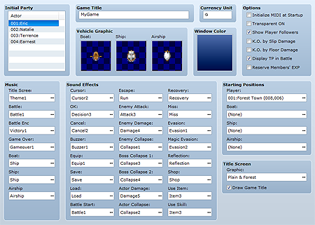
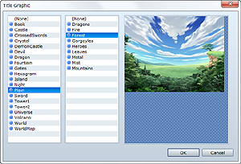

System data is a collection of important data, including default settings for your game. You can specify settings such as the organization and position of party members at the start of the game and the music to play in various situations.

The party members at the start of the game.
You can add as many actors as you want to the party, but only the front four can fight in battles.
To add/change an actor, double-click a list entry (or a blank space to add a new actor), and then specify an actor. To remove an actor, right-click the one you want to remove and then select Remove in the shortcut menu that appears.
The title of your game. The name you entered in the Title box when you created the project will be set automatically here. The game title appears on the game's title screen and on the game window's title bar.
Images for the vehicles (boats, ships, and airships) that appear on maps. Specify the images you want to use in the dialog boxes that open when you double-click each field. If you do not want to display a graphic, specify None.
The unit of currency used in the game. It will be used to display the party's money on the menu screen.
The background color of windows used during the game. In the dialog boxes that open when you double-click the field, specify color values (-255 to 255) for R, G, and B.
Allows you to set special processing and rules for game operations.
Selecting this option initializes DirectMusic at game startup. It may take some time to initialize when using Windows Vista or Windows 7.
Selecting this option starts the game with the transparency flag set to on (invisible) for the player character graphic. This can be switched off by the Change Transparency event command.
Selecting this option starts the game displaying walking graphics for party members behind the first actor while moving on the map. If there are five or more party members, only walking graphics for the first four will be displayed.
Selecting this option allows HP to be reduced to 0 by status ailment damage, such as poison. If it is not selected, damage stops at 1 HP.
Selecting this option allows HP to be reduced to 0 by damage caused by map terrain. If it is not selected, damage stops at 1 HP.
Selecting this option displays the TP of each party member in the status window during battles.
Selecting this option allows party members that did not participate in a battle to get a share of the resulting EXP when a battle is won.
The music to play while playing the game Specify the BGM/ME files to play for each scene. The settings for the various scenes are described below. Note that the music that plays while the player is moving on a map is set by map data.
| Title Screen | BGM played on the title screen |
|---|---|
| Battle | BGM played during battles |
| Battle End | ME played at the end of battle (when player wins) |
| Game Over | ME played on the Game Over screen |
| Boat | BGM played while onboard a boat |
| Ship | BGM played while onboard a ship |
| Airship | BGM played while onboard an airship |
The sound effects to play when the player controls characters, an action starts in battle, and other in-game situations. Specify the SE file to play in the box that matches the type of sound effect you want to set. The settings for the various situations are described below.
| Cursor | SE to play when moving the cursor |
|---|---|
| OK | SE to play when confirming a command |
| Cancel | SE to play when canceling a command, such as on a menu screen |
| Buzzer | SE to play when selecting an invalid command, such as on a menu screen |
| Equip | SE to play when changing equipment on a menu screen |
| Save | SE to play when saving a game |
| Load | SE to play when loading a game |
| Battle Start | SE to play when encountering an enemy |
| Escape | SE to play when trying to flee from battle |
| Enemy Attack | SE to play when an enemy attacks on the battle screen |
| Enemy Damage | SE to play when an enemy takes damage on the battle screen |
| Enemy Collapse | SE to play when an enemy is defeated on the battle screen |
| Boss Collapse 1 | SE to play upon the defeat of an enemy whose Collapse Effect under Features is Boss. |
| Boss Collapse 2 | SE to play while the collapse effect is displayed for the defeat of an enemy whose Collapse Effect under Features is Boss. |
| Actor Damage | SE to play when an ally takes damage. |
| Actor Collapse | SE to play when an actor is knocked out (K.O. state) on the battle screen. |
| Recovery | SE to play when a recovery message is displayed on the battle screen. |
| Miss | SE to play when a physical attack misses, resulting in no damage being dealt |
| Evasion | SE to play when a physical attack is dodged |
| Magic Evasion | SE to play when a magic attack is evaded |
| Reflection | SE to play when a magic attack is reflected |
| Shop | SE to play when buying or selling items during shop events |
| Use Item | SE played when using an item on a menu screen |
| Use Skill | SE played when using a skill on a menu screen |
The positions of the player and vehicle (boat, ship, or airship) at the start of the game. Specify by clicking ... in each box to open the dialog box where you set the map name in the box to the left and a position in the box to the right.
An icon with the letter S on it will be displayed on the map at the specified starting positions. This icon can be moved by dragging or deleted with the Delete key, just as with map events.
However, a game cannot be started without the player's starting position set (icon deleted).

The image displayed on the game screen immediately after the game starts. Specify the image you want to use in the dialog box that appears when you click ... in the setting box. Selecting the Draw Game Title option displays the title you specified with the Game Title setting on the upper part of the title screen. Do not select this option if the title of your game is incorporated into the title screen image you are using.